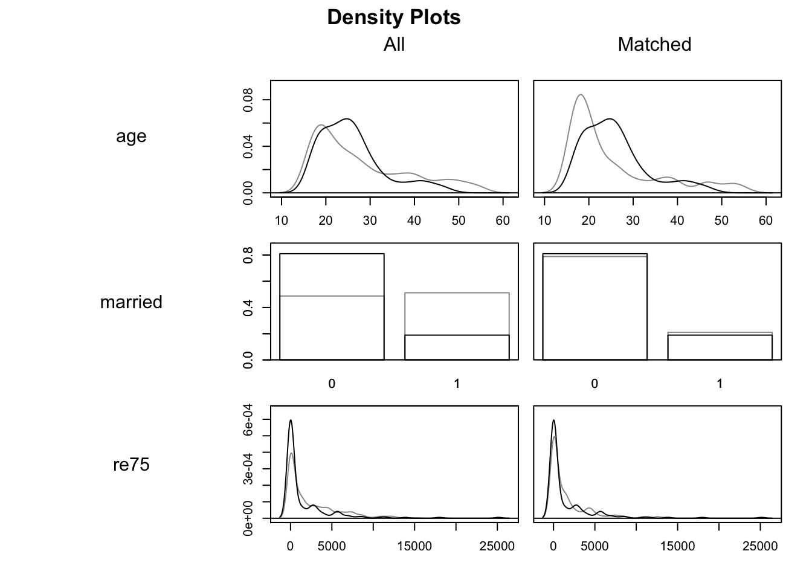
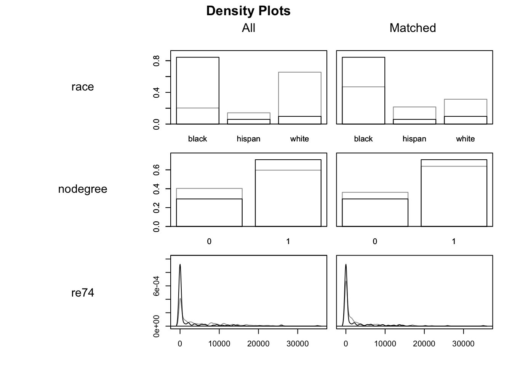

Part Seventeen: Causal Inference: Controlling and Matching Approaches
statistics
causality
R
matching
regression
Author
Jon Minton
Published
March 2, 2024
Recap and aim
The previous post (re)introduced three ways to try to allow causal effect estimation using observational data: i) ‘controlling for’ variables using multiple regression; ii) matching methods; iii) Identifying possible ‘natural experiments’ in observational datasets. The fundamental challenge of using observational data to estimate causal effects is that we cannot be sure either the observed (\(X^*\)) or unobserved (\(W\)) characteristics of observations do not influence allocation to exposure/treatment, i.e. cannot rule out \(X^* \rightarrow Z\) or \(W \rightarrow Z\), meaning that statistical estimates of the effect of Z on the outcome \(Z \rightarrow y_i\) may be biased.
The first two approaches will, within limits, generally attenuate the link between \(X^*\) and \(Z\), but can do little to break the link between \(W\) and \(Z\), as \(W\) is by definition those features of observational units that are not contained in the dataset \(D\), and so any statistical method will be ‘blind’ to. The last approach, if the instrumental variable possesses the properties we expect and hope it will, should be able to break the \(W \rightarrow Z\) link too. But unfortunately that can be a big if: the instrument may not have the properties we hope it does.
This post will go explore some application of the first two approaches: controlling for variables using multiple regression; and using matching methods. A fuller consideration of the issues is provided in Ho et al. (2007), and the main package and dataset used will be that of the associated MatchIt package Ho et al. (2011) and vignette using the lalonde dataset.
Getting started
We start by loading the Matchit package and exploring the lalonde dataset.
# A tibble: 614 × 9
treat age educ race married nodegree re74 re75 re78
<int> <int> <int> <fct> <int> <int> <dbl> <dbl> <dbl>
1 1 37 11 black 1 1 0 0 9930.
2 1 22 9 hispan 0 1 0 0 3596.
3 1 30 12 black 0 0 0 0 24909.
4 1 27 11 black 0 1 0 0 7506.
5 1 33 8 black 0 1 0 0 290.
6 1 22 9 black 0 1 0 0 4056.
7 1 23 12 black 0 0 0 0 0
8 1 32 11 black 0 1 0 0 8472.
9 1 22 16 black 0 0 0 0 2164.
10 1 33 12 white 1 0 0 0 12418.
# ℹ 604 more rows
Data
The description of the lalonde dataset is as follows:
Code
help(lalonde)
Description
This is a subsample of the data from the treated group in the National Supported Work Demonstration (NSW) and the comparison sample from the Population Survey of Income Dynamics (PSID). This data was previously analyzed extensively by Lalonde (1986) and Dehejia and Wahba (1999).
Format
A data frame with 614 observations (185 treated, 429 control). There are 9 variables measured for each individual.
“treat” is the treatment assignment (1=treated, 0=control).
“age” is age in years.
“educ” is education in number of years of schooling.
“race” is the individual’s race/ethnicity, (Black, Hispanic, or White). Note previous versions of this dataset used indicator variables black and hispan instead of a single race variable.
“married” is an indicator for married (1=married, 0=not married).
“nodegree” is an indicator for whether the individual has a high school degree (1=no degree, 0=degree).
“re74” is income in 1974, in U.S. dollars.
“re75” is income in 1975, in U.S. dollars.
“re78” is income in 1978, in U.S. dollars.
“treat” is the treatment variable, “re78” is the outcome, and the others are pre-treatment covariates.
Clearly this is quite complicated data, where the single implied control, wages in 1975 (re75) is not sufficient. There are also a great many observations where wages in either of both years were 0, hence the horizontal and vertical streaks apparent.
The two lines are the linear regression lines for the two treatment groups as a function of earlier wage. The lines are not fixed to have the same slope, so the differences in any crude treatment effect estimate vary by earlier wage, but for most previous wages the wages in 1978 appear to be lower in the treatment group (blue), than the control group (red). This would suggest either that the treatment may be harmful to wages… or that there is severe imbalance between the characteristics of persons in both treatment conditions.
Let’s now start to use a simple linear regression to estimate an average treatment effect, before adding more covariates to see how these model-derived estimates change
Code
# Model of treatment assignment onlymod_01 <-lm(re78 ~ treat, unmatched_data)summary(mod_01)
Call:
lm(formula = re78 ~ treat, data = unmatched_data)
Residuals:
Min 1Q Median 3Q Max
-6984 -6349 -2048 4100 53959
Coefficients:
Estimate Std. Error t value Pr(>|t|)
(Intercept) 6984.2 360.7 19.362 <2e-16 ***
treat -635.0 657.1 -0.966 0.334
---
Signif. codes: 0 '***' 0.001 '**' 0.01 '*' 0.05 '.' 0.1 ' ' 1
Residual standard error: 7471 on 612 degrees of freedom
Multiple R-squared: 0.001524, Adjusted R-squared: -0.0001079
F-statistic: 0.9338 on 1 and 612 DF, p-value: 0.3342
On average the treated group had (annual?) wages $635 lower than the control group. However the difference is not statistically significant.
Call:
lm(formula = re78 ~ re75 + treat, data = unmatched_data)
Residuals:
Min 1Q Median 3Q Max
-15918 -5457 -2025 3824 54103
Coefficients:
Estimate Std. Error t value Pr(>|t|)
(Intercept) 5547.63718 412.84637 13.438 < 2e-16 ***
re75 0.58242 0.08937 6.517 1.5e-10 ***
treat -90.79498 641.40291 -0.142 0.887
---
Signif. codes: 0 '***' 0.001 '**' 0.01 '*' 0.05 '.' 0.1 ' ' 1
Residual standard error: 7230 on 611 degrees of freedom
Multiple R-squared: 0.06642, Adjusted R-squared: 0.06336
F-statistic: 21.73 on 2 and 611 DF, p-value: 7.611e-10
Previously observed wage is statistically significant and positive. The point estimate on treatment is smaller, and even less ‘starry’.
Now let’s add all possible control variables and see what the treatment effect estimate produced is:
Code
mod_03 <-lm(re78 ~ re75 + age + educ + race + married + nodegree + re74 + treat, unmatched_data)summary(mod_03)
Call:
lm(formula = re78 ~ re75 + age + educ + race + married + nodegree +
re74 + treat, data = unmatched_data)
Residuals:
Min 1Q Median 3Q Max
-13595 -4894 -1662 3929 54570
Coefficients:
Estimate Std. Error t value Pr(>|t|)
(Intercept) -1.174e+03 2.456e+03 -0.478 0.6328
re75 2.315e-01 1.046e-01 2.213 0.0273 *
age 1.298e+01 3.249e+01 0.399 0.6897
educ 4.039e+02 1.589e+02 2.542 0.0113 *
racehispan 1.740e+03 1.019e+03 1.708 0.0882 .
racewhite 1.241e+03 7.688e+02 1.614 0.1071
married 4.066e+02 6.955e+02 0.585 0.5590
nodegree 2.598e+02 8.474e+02 0.307 0.7593
re74 2.964e-01 5.827e-02 5.086 4.89e-07 ***
treat 1.548e+03 7.813e+02 1.982 0.0480 *
---
Signif. codes: 0 '***' 0.001 '**' 0.01 '*' 0.05 '.' 0.1 ' ' 1
Residual standard error: 6948 on 604 degrees of freedom
Multiple R-squared: 0.1478, Adjusted R-squared: 0.1351
F-statistic: 11.64 on 9 and 604 DF, p-value: < 2.2e-16
With all of these variables as controls, the effect of treatment is now statistically significant and positive, associated with on average an increase of $155 over the control group.
However, we should probably be concerned about how dependent this estimate is on the specific model specification we used. For example, it is fairly common to try to ‘control for’ nonlinearities in age effects by adding a squared term. If modeller decisions like this don’t make much difference, then its addition shouldn’t affect the treatment effect estimate. Let’s have a look:
The inclusion of the squared term to age has changed the point estimate of treatment from around $1550 to $1370. However it has also changed the statistical significance of the effect from p < 0.05 to p < 0.10, i.e. from ‘statistically significant’ to ‘not statistically significant’. If we were playing the stargazing game, this might be the difference between a publishable finding and an unpublishable finding.
And what if we excluded age, because none of the terms are statistically significant at the standard level?
Call:
lm(formula = re78 ~ re75 + educ + race + married + nodegree +
re74 + treat, data = unmatched_data)
Residuals:
Min 1Q Median 3Q Max
-13681 -4912 -1652 3877 54648
Coefficients:
Estimate Std. Error t value Pr(>|t|)
(Intercept) -676.43048 2115.37702 -0.320 0.7493
re75 0.22705 0.10395 2.184 0.0293 *
educ 389.00786 154.33865 2.520 0.0120 *
racehispan 1710.16654 1015.15590 1.685 0.0926 .
racewhite 1241.00510 768.22972 1.615 0.1067
married 478.55017 671.28910 0.713 0.4762
nodegree 201.04497 833.99164 0.241 0.8096
re74 0.30209 0.05645 5.351 1.24e-07 ***
treat 1564.68896 779.65173 2.007 0.0452 *
---
Signif. codes: 0 '***' 0.001 '**' 0.01 '*' 0.05 '.' 0.1 ' ' 1
Residual standard error: 6943 on 605 degrees of freedom
Multiple R-squared: 0.1475, Adjusted R-squared: 0.1363
F-statistic: 13.09 on 8 and 605 DF, p-value: < 2.2e-16
Now the exclusion of this term, which the coefficient tables suggested wasn’t statistically significant, but intuitively we recognise as an important determinant of labour market activity, has led to yet another point estimate. It’s switched back to ‘statistically significant’ again, but now the point estimate is about $1565 more. Such estimates aren’t vastly different, but they definitely aren’t the same, and come from just a tiny same of the potentially hundreds of different model specifications we could have considered and decided to present to others.
Matching with MatchIt
As the title of Ho et al. (2007) indicates, matching methods are presented as a way of preprocessing the data to reduce the kind of model dependence we’ve just started to explore. Let’s run the first example they present in the MatchIt vignette then discuss what it means:
Code
m.out0 <-matchit(treat ~ age + educ + race + married + nodegree + re74 + re75, data = lalonde,method =NULL, distance ="glm")summary(m.out0)
Call:
matchit(formula = treat ~ age + educ + race + married + nodegree +
re74 + re75, data = lalonde, method = NULL, distance = "glm")
Summary of Balance for All Data:
Means Treated Means Control Std. Mean Diff. Var. Ratio eCDF Mean
distance 0.5774 0.1822 1.7941 0.9211 0.3774
age 25.8162 28.0303 -0.3094 0.4400 0.0813
educ 10.3459 10.2354 0.0550 0.4959 0.0347
raceblack 0.8432 0.2028 1.7615 . 0.6404
racehispan 0.0595 0.1422 -0.3498 . 0.0827
racewhite 0.0973 0.6550 -1.8819 . 0.5577
married 0.1892 0.5128 -0.8263 . 0.3236
nodegree 0.7081 0.5967 0.2450 . 0.1114
re74 2095.5737 5619.2365 -0.7211 0.5181 0.2248
re75 1532.0553 2466.4844 -0.2903 0.9563 0.1342
eCDF Max
distance 0.6444
age 0.1577
educ 0.1114
raceblack 0.6404
racehispan 0.0827
racewhite 0.5577
married 0.3236
nodegree 0.1114
re74 0.4470
re75 0.2876
Sample Sizes:
Control Treated
All 429 185
Matched 429 185
Unmatched 0 0
Discarded 0 0
With method = NULL, the matchit function presents some summary estimates of differences in characteristics between the Treatment and Control groups. For example, the treated group has an average age of around 25, compared with 28 in the control group, have a slightly higher education score, are more likely to be Black, less likely to be Hispanic, and much less likely to be White (all important differences in the USA context, especially perhaps of the 1970s). They are also less likely to be married, more likely to have no degree, and have substantially earlier wages in both 1974 and 1975. Clearly a straightforward comparision between average outcomes is far from a like-with-like comparisons between groups. The inclusion of other covariates (\(X^*\)) does seem to have made a difference, switching the reported direction of effect and its statistical significance, but if we could find a subsample of the control group whose characteristics better match those of the treatment groups, we would hopefully get a more precise and reliable estimate of the effect of the labour market programme.
The next part of the vignette shows MatchIt working with some fairly conventional settings:
Code
m.out1 <-matchit(treat ~ age + educ + race + married + nodegree + re74 + re75, data = lalonde,method ="nearest", distance ="glm")m.out1
A matchit object
- method: 1:1 nearest neighbor matching without replacement
- distance: Propensity score
- estimated with logistic regression
- number of obs.: 614 (original), 370 (matched)
- target estimand: ATT
- covariates: age, educ, race, married, nodegree, re74, re75
The propensity score, i.e. the probability of being in the treatment group, has been predicted using the other covariates, and using logistic regression. For each individual in the treatment group, a ‘nearest neighbour’ in the control group has been identified with the most similar propensity score, which we hope also will also mean the characteristics of the treatment group, and matched pairs from the control group, will be more similar too.
We can start to see what this means in practice by looking at the summary of the above object
Code
summary(m.out1)
Call:
matchit(formula = treat ~ age + educ + race + married + nodegree +
re74 + re75, data = lalonde, method = "nearest", distance = "glm")
Summary of Balance for All Data:
Means Treated Means Control Std. Mean Diff. Var. Ratio eCDF Mean
distance 0.5774 0.1822 1.7941 0.9211 0.3774
age 25.8162 28.0303 -0.3094 0.4400 0.0813
educ 10.3459 10.2354 0.0550 0.4959 0.0347
raceblack 0.8432 0.2028 1.7615 . 0.6404
racehispan 0.0595 0.1422 -0.3498 . 0.0827
racewhite 0.0973 0.6550 -1.8819 . 0.5577
married 0.1892 0.5128 -0.8263 . 0.3236
nodegree 0.7081 0.5967 0.2450 . 0.1114
re74 2095.5737 5619.2365 -0.7211 0.5181 0.2248
re75 1532.0553 2466.4844 -0.2903 0.9563 0.1342
eCDF Max
distance 0.6444
age 0.1577
educ 0.1114
raceblack 0.6404
racehispan 0.0827
racewhite 0.5577
married 0.3236
nodegree 0.1114
re74 0.4470
re75 0.2876
Summary of Balance for Matched Data:
Means Treated Means Control Std. Mean Diff. Var. Ratio eCDF Mean
distance 0.5774 0.3629 0.9739 0.7566 0.1321
age 25.8162 25.3027 0.0718 0.4568 0.0847
educ 10.3459 10.6054 -0.1290 0.5721 0.0239
raceblack 0.8432 0.4703 1.0259 . 0.3730
racehispan 0.0595 0.2162 -0.6629 . 0.1568
racewhite 0.0973 0.3135 -0.7296 . 0.2162
married 0.1892 0.2108 -0.0552 . 0.0216
nodegree 0.7081 0.6378 0.1546 . 0.0703
re74 2095.5737 2342.1076 -0.0505 1.3289 0.0469
re75 1532.0553 1614.7451 -0.0257 1.4956 0.0452
eCDF Max Std. Pair Dist.
distance 0.4216 0.9740
age 0.2541 1.3938
educ 0.0757 1.2474
raceblack 0.3730 1.0259
racehispan 0.1568 1.0743
racewhite 0.2162 0.8390
married 0.0216 0.8281
nodegree 0.0703 1.0106
re74 0.2757 0.7965
re75 0.2054 0.7381
Sample Sizes:
Control Treated
All 429 185
Matched 185 185
Unmatched 244 0
Discarded 0 0
Previously, there were 185 people in the treatment group, and 429 people in the control group. After matching there are 185 people in the treatment group… and also 185 people in the control group. So, each of the 185 people in the treatment group has been matched up with a ‘data twin’ in the control group, so the ATT should involve more of a like-with-like comparison.
The summary presents covariate-wise differences between the Treatment and Control groups for All Data, then for Matched Data. We would hope that, in the Matched Data, the differences are smaller for each covariate, though this isn’t necessarily the case. After matching, for example, we can see that the Black proportion in the Control group is now 0.47 rather than 0.20, and that the earlier income levels are lower, in both cases bringing the values in the Control group closer to, but not identical to, those in the Treatment group. Another way of seeing how balancing has changed things is to look at density plots:
Code
plot(m.out1, type ="density", interactive =FALSE,which.xs =~age + married + re75+ race + nodegree + re74)


In these density charts, the darker lines indicate the Treatment group and the lighter lines the Control groups. The matched data are on the right hand side, with All data on the left. We are looking to see if, on the right hand side, the two sets of density lines are more similar than they are on the right. Indeed they do appear to be, though we can also tell they are far from identical.
Estimating Treatment Effect Sizes after matching
Historically, the MatchIt package was designed to work seamlessly with Zelig, which made it much easier to use a single library and framework to produce ‘quantities of interest’ using multiple model structures. However Zelig has since been deprecated, meaning the vignette now recommends using the marginaleffects package. We’ll follow their lead:
First the vignette recommends extracting matched data from the matchit output:
Whereas the unmatched data contains 614 observations, the matched data contains 370 observations. Note that the Treatment group contained 185 observations, and that 370 is 185 times two. So, the matched data contains one person in the Control group for each person in the Treatment group.
We can also see that, in addition to the metrics originally included, the matched data contains three additional variables: ‘distance’, ‘weights’ and ‘subclass’. The ‘subclass’ field is perhaps especially useful for understanding the intuition of the approach, because it helps show which individual in the Control group has been paired with which individual in the Treatment group. Let’s look at the first three subgroups:
Code
m.data |>filter(subclass =='1')
# A tibble: 2 × 12
treat age educ race married nodegree re74 re75 re78 distance weights
<int> <int> <int> <fct> <int> <int> <dbl> <dbl> <dbl> <dbl> <dbl>
1 1 37 11 black 1 1 0 0 9930. 0.639 1
2 0 22 8 black 1 1 16961. 0 959. 0.203 1
# ℹ 1 more variable: subclass <fct>
So, for the first subclass, a 37 year old married Black person with no degree has been matched to a 22 year old Black married person with no degree.
Code
m.data |>filter(subclass =='2')
# A tibble: 2 × 12
treat age educ race married nodegree re74 re75 re78 distance weights
<int> <int> <int> <fct> <int> <int> <dbl> <dbl> <dbl> <dbl> <dbl>
1 1 33 12 white 1 0 0 0 12418. 0.0429 1
2 0 39 12 white 1 0 1289. 0 1203. 0.0430 1
# ℹ 1 more variable: subclass <fct>
For the second subclass a 33 year old married White person with a degree has been paired with a 39 year old White person with a degree.
For the third subclass, a 31 year old unmarried Hispanic person with no degree has been paired with a 16 year old White person with no degree.
In each case, we can see the pairings are similar in some ways but (as with the last example) quite dissimilar in others. The matching algorithm is trying to do the best it can with the data available, especially with the constraint1 that once a person in the Control group has been paired up once to someone in the Treatment group, they can’t be paired up again with someone else in the Treatment group.
The identification of these specific pairings suggests we can used a fairly crude strategy to produce an estimate of the ATT: namely just compare the outcome across each of these pairs. Let’s have a look at this:
This crude paired comparison suggests an average difference that’s slightly positive, of $894.37.
This is not a particularly sophisticated or ‘kosher’ approach however. Instead the vignette suggests calculating the treatment effect estimate as follows:
Using the recommended approach, the ATT estimate is now $1121. Not statistically significant at the conventional 95% threshold, but also more likely to be positive than negative.
Summary
In this post we have largely followed along with the introductionary vignette from the MatchIt package, in order to go from the fairly cursory theoretical overview in the previous post, to showing how some of the ideas and methods relating to multiple regression and matching methods work in practice. There are a great many ways that both matching, and multiple regression, can be implemented in practice, and both are likely to affect any causal effect estimates we produce. However, the aspiration of using matching methods is to somewhat reduce the dependency that causal effect estimates have on the specific model specifications we used.
Coming up
The next post concludes this series on causal inference, by discussing in more detail a topic many users of causal inference will assume I should have started with: the Pearlean school of causal inference. In brief: the approach to causal inference I’m used to interprets the problem, fundamentally, as a missing data problem; whereas the Pearlean approach interprets it more as a modelling problem. I see value in both sides, as well as some points of overlap, but in general I’m both more used to, and more comfortable with, the missing data interpretation.
References
Ho, Daniel E., Kosuke Imai, Gary King, and Elizabeth A. Stuart. 2007. “Matching as Nonparametric Preprocessing for Reducing Model Dependence in Parametric Causal Inference.”Political Analysis 15 (3): 199–236. https://doi.org/10.1093/pan/mpl013.
———. 2011. “MatchIt: Nonparametric Preprocessing for Parametric Causal Inference.”Journal of Statistical Software 42 (8): 1–28. https://doi.org/10.18637/jss.v042.i08.
Footnotes
I think this is implied by the use of method = "nearest", which is the default, meaning ‘greedy nearest neighbour matching’.↩︎